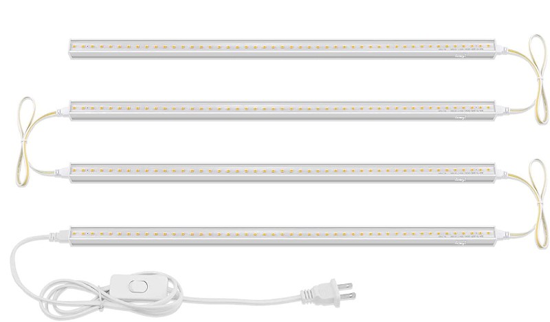
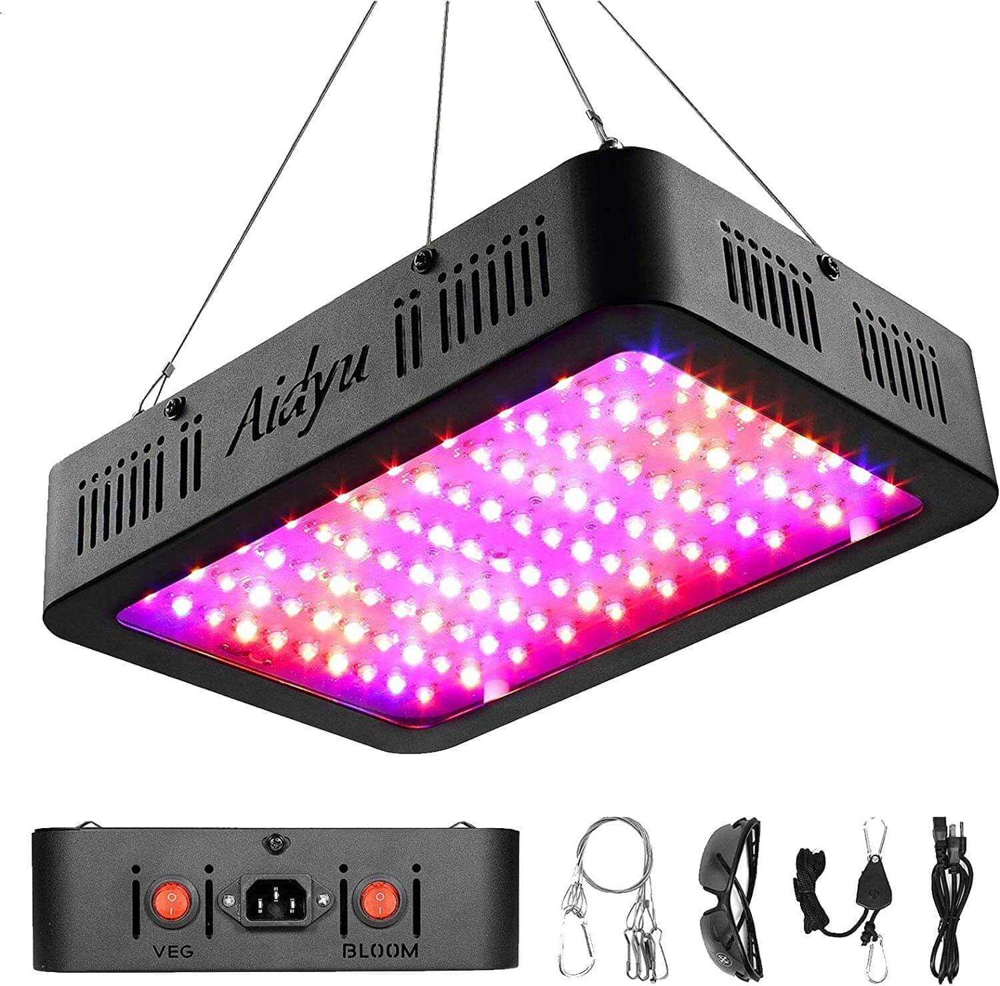
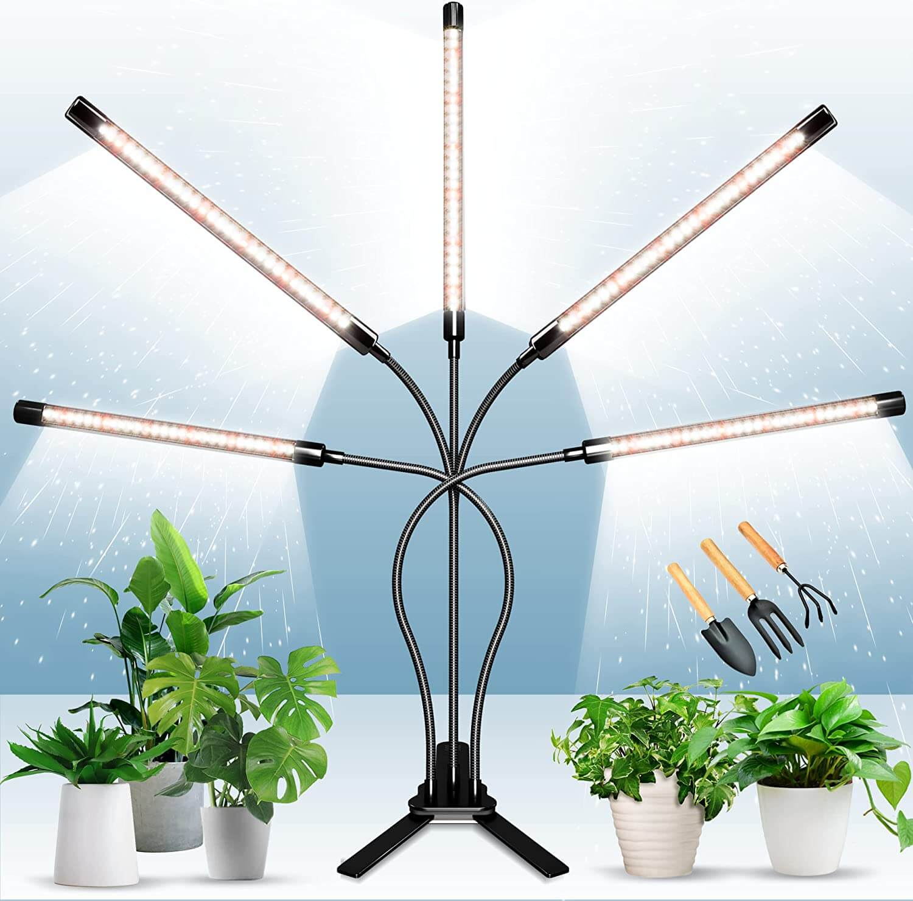
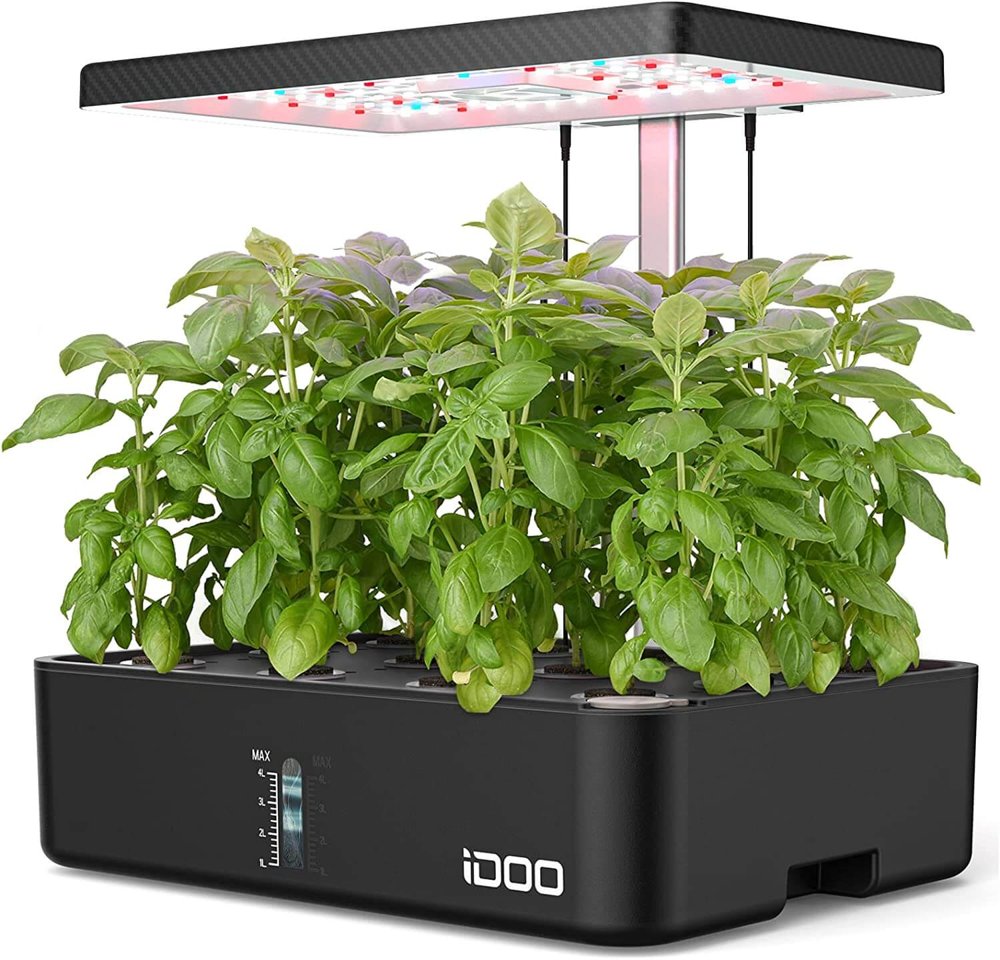
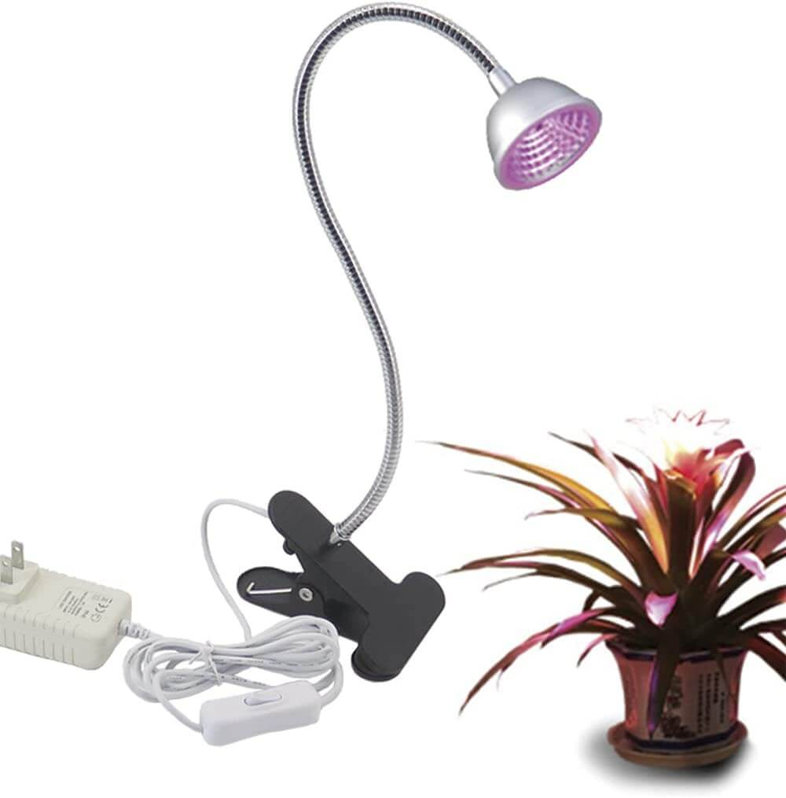
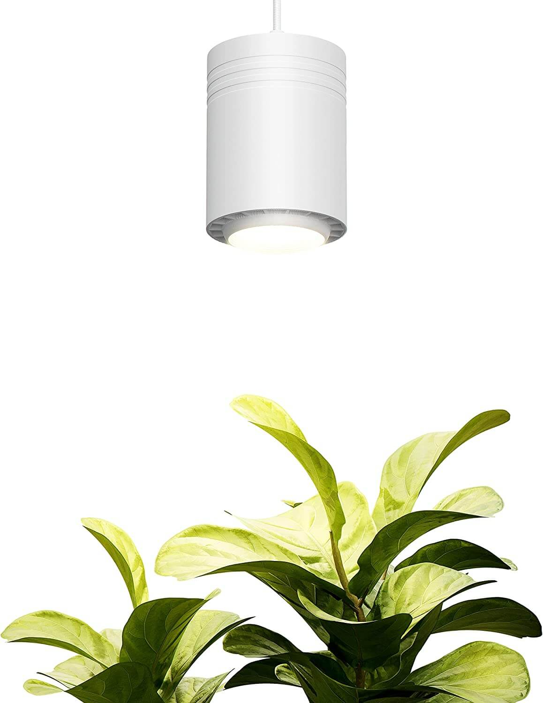
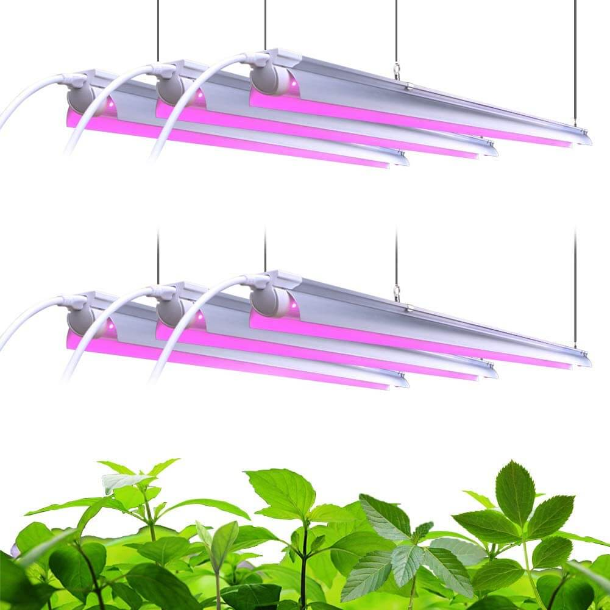
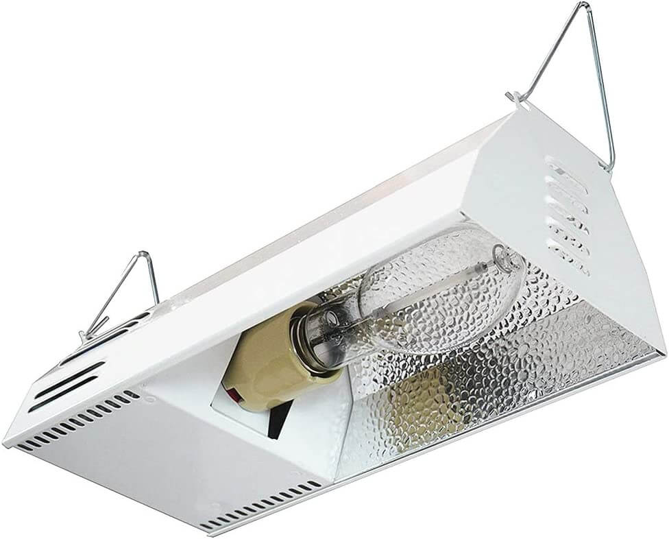

Grow lights are a necessity for almost all indoor hydroponic systems. They can provide extra
light during the dark
winter months or be the sole form of light for your plants.
We have researched the best grow lights available online. The best were picked by efficiency, cost, brightness,
and ease
of use. Here are the best grow lights for your system.
Our Top Picks
Jump to Review
Jump to Review
Jump to Review
Jump to Review
Things to Keep in Mind
First of all, check out our guide on How to Choose the Best Grow Lights for your Hydroponic
System
Size
Think about the size of your system, how much space are you going to need to cover? Can the
light come from one source
or do you need multiple fixtures? Are you going to need to move the light from time to time? If so don't
choose
something heavy or delicate. If the light is going to get hot, you can't put it next to curtains or drapes.
Wattage
having enough light is important for your hydroponic system. If you're using LEDs, the wattage
will be very low. This is
because LEDs are more efficient and produce less heat. With LEDs, you need around 6 watts per square foot and
with
fluorescents, you need about 32 watts per square foot.
Be sure to think about how you will mount your lights. Many products here include
their own hanging mechanisms.

What We Like
Affordable
Soft, natural white light
Comes with multiple hanging options
What We Dont Like
Doesn't come with reflectors
Only comes with 2 power cords for 4 lights
Short power cord
For an option that will just get the job done, choose Barrina Grow Lights.
These lights will
work best with a rack set
up, or to provide extra light at windows. It’s not going to be winning any awards for design, but that's
what makes it
cheap. We wish it had reflectors included to help point light in the direction of plants though. The
pinkish-white light
is the ultimate general light color for hydroponic plants. They are two feet long and provide full-spectrum
light. As
they are LEDs, the 40W consumption is equal to a 250W fluorescent light. Don't get these lights if you plan
to separate
them, you only get 2 power cords and 4 connector pieces, so you have to use them in groups. Barrina is our
favorite grow
light maker, and this isn't their only light on this list. We gave it the top spot for its price-to-watt
ratio, ease of
setup, and brightness.

What We Like
Internal fans for cooling
Veg and bloom modes
Compact Build
What We Dont Like
High electricity consumption
Must be hung
Compact and powerful, Aidyu’s grow light is packing a punch. The Veg mode provides a
blueish light for growth and the
Bloom light provides a reddish light for the flowing phase. You can combine the two to produce yellow light.
Two cooling
fans keep the LEDs cool, which extends the life of the lights. The wattage consumption is higher than
expected, but this
is due to the cooling fans. Lights can be daisy-chained together. But with how powerful this is, we would be
surprised
if you needed more than one. Hanging lines are included, but you will need to figure out what to attach the
carabiner
to. We wish you could install your lights another way, but Aidyu doesn’t provide another option. Aidyu
provides special
dark glasses to wear while the light is on. Probably a little extreme, but it’s nice.

What We Like
Adjustable arms
Dimmable
Can change color
What We Dont Like
Not very bright
Have to clamp down base
Doesn’t remember powered off state
Perfect for a small setup, this bendy light can reach wherever you need light. It’s
best for starting seeds or a
desk-sized hydroponics setup. The arms have aluminum fins on the back to dissipate heat. The 12W consumption
is closer
to producing 75W of light equivalent than the advertised 150W light equivalent. We wish it could remember
its
last
powered state, so you could use an external timer or save time when turning it back on. The dimmer is great,
but the
light isn’t super bright, to begin with. We would be surprised if you ever touched the dimmer. It even comes
with a few
miniature garden tools! They make good decoration and the spade can be used to repot plants.

What We Like
Built-in fan
12 pod support
Adjustable light height
What We Dont Like
Overpriced
Hard to clean
Can’t adjust light timer
All in ones aren’t our favorite. They tend to be overpriced and overbuilt. We must
concede that they do look beautiful
and are easy to use. If you’re looking for something cheaper that's also small, check out our 5-gallon
bucket
guide. We
were confused by their decision to use a water pump instead of an air pump. You need an air pump to add
oxygen
to the
water, not the included water pump. Plant food is included with the purchase. There are germination caps to
increase
humidity while the plants are germinating. While the light is adjustable, it can't go up super high. Plants
like chives
will grow past the highest setting. If you need to clean the system, you will have to take the whole system
apart. Some
customers have s small issues, but the customer service is fast and nice.

What We Like
Clip on base
Adjustable gooseneck
Tiny
What We Dont Like
No light timer
Poor build quality
This is perfect for a small one or two plant hydroponic set up. The purple light is
ugly to some, but it is more
efficent due to how plants consume light. The red light is great for blooming and the blue light is good for
healthy
leaves. Many people have reported that the adjustable gooseneck is a little fidgety, but the product is
cheap.
While it
doesnt have a timer, you can pair the light with a smart switch/ timer switch to automate the on off cycle.

What We Like
Classy
15 foot long braided cord
Timer outlet included
What We Dont Like
Expensive
Must be hung
Gets hot
This is the cream de la creme of hydroponic grow lights. If you want to have a
beautiful set up, this is a must. It is
$150 for the small version, but the small size is misleading. You can set the time on and off to whatever
you
want with
the timer outlet. Although you can only hang it, it comes with wall fairleads and a swag hook for better
cord
management. A major plus of this lightbulb is that it creates a full spectrum output, including UV rays.

What We Like
Comes with reflectors
Usable for all growing stages
2 year warranty
What We Dont Like
Back gets hot
Purple light not optimal for all plants
One reviewer said these were “Visible from the International Space Station”. These
are
bright! The use of purple light
further increases the amount of light plants can absorb. The reflector they include can increase light
getting
to plants
by 20%. If you dont want to get a 6 pack, barrina sells these lights in several different sizes and
quantities. We
recommend replacing the clips they use to hold up the lights, the lights have broken out of the clips and
smashed into
the plants too many times to count. The only thing to look out for is that they only provide 3 plugs for
the
lights. The
remainder must be daisy chained together.

What We Like
Its a high pressure sodium lamp
Reflectors inside
Creates UV rays
What We Dont Like
Have to replace bulb occasionally
Noisy
HPS lamps used to be the king of the growing industry until LEDs replaced them. HPS
are
not a efficient as LEDs, but
they have a cheaper initial cost. The bulb must be replaced if it breaks or it starts to get dimmer. These
are
also
great if you need to heat a room while growing your plants. It comes with a flowering bulb, so it is best
to
purchase a
vegetative bulb with your lamp.
Questions
We would be happy to hear from you if you have any questions. We can talk hydroponics,
grow
lights, or whatever you
want. Hydroponicsathome.us@gmail.com
Note
Some links may be affiliate links and we may receive a commission for your purchases.